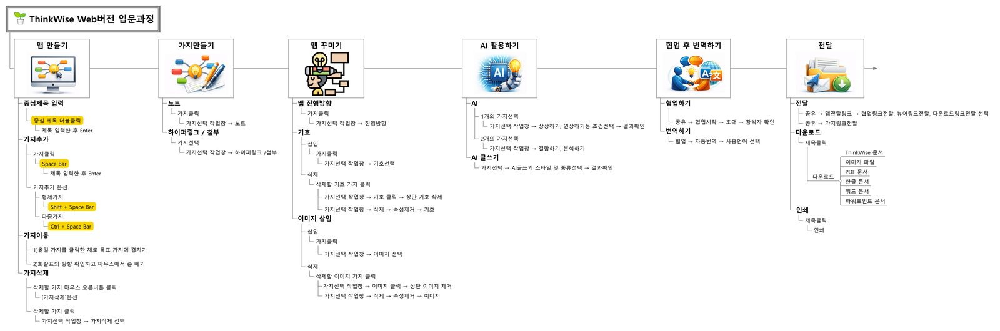
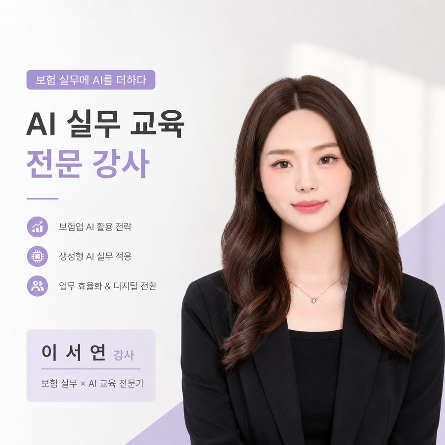

사람이 왜 이해하지 못하는지, 오래 관찰해왔습니다.
같은 내용도, 전달 방식에 따라
반응이 달라집니다
현장에서 반복적으로 확인한 사실입니다. 지금은 AI로 그 "이해의 격차"를 줄이는 일을 합니다.

(추가 예정)
이 사람의 강점은 하나다 — 문제를 구조로 바꾸는 것.
반복되는 문제는,
결국 구조의 문제다
9년 전 예약 손님을 관찰하던 습관이, 지금 AI 워크플로우를 설계하는 방식과 같습니다.
관찰
흩어진 문제를
구조로 본다
번역
복잡한 정보를
이해되게 바꾼다
실행
AI로 워크플로우에
연결한다
다룰 수 있는 영역은 넓지만, 축은 AI 기획으로 수렴하고 있다.
Skills
AI 활용 기획
서비스 · 콘텐츠 기획
운영 · 경영지원
교육
CS Leaders(관리사) · CS강사 1급 · 면접컨설턴트 1급
현장 경력 9년 9개월 이후, 지금은 AI를 실무에 연결하는 시간을 보내고 있다.
현장에서 쌓은 시간,
지금은 AI로 확장하는 시간
-
2025.04 – 현재
AI Project · Portfolio 기간
서비스기획 · 교육기획 · AI 활용 역량 강화
프리랜서 CS/AI 교육 강의 병행 · 공모전 제출 · 포트폴리오 재구축 -
2024.09 – 2025.04
심테크시스템 (ThinkWise) · 영업지원/교육운영
SaaS 사용자 교육 설계 · AI 자기소개서 과정 개발 · 법무연수원 교육 · 청소년 마인드맵 경진대회 총괄
-
2023.10 – 2024.07
CS/면접 컨설팅 · 프리랜서
-
2023.08 – 2024.01
원라인 · 경영지원 주임/파트장
-
2022.08 – 2023.08
키플레이스 · 경영지원부 대리(서비스기획)
55개 매장 협업 workflow 구축
-
2020.06 – 2022.06
교학모터스 서비스센터 · 고객안내
-
2015.12 – 2019.02
선인자동차(포드/링컨) · 고객안내
5개의 프로젝트, 하나의 질문.
"사람이 이해할 수 있는가"
업종은 다르지만, 전부 같은 문제의식에서 시작했습니다.
ThinkWise 입문교육
설명이 아니라 흐름을 가르치다
재직 중 프로젝트보험설계사 AI 실무교육
결과물부터 설계하다
개인 기획 · 공모전 제출AI EduMentor
감지는 AI가, 판단은 사람이
개인 기획 · 정부과제 제출청바지 (NowYouth)
청중에 따라, 언어를 바꾸다
재직 중 프로젝트키플레이스
사람에서 시스템으로
청소년 마인드맵 경진대회 총괄 운영
콘텐츠 기획을 넘어 행사 운영까지
ThinkWise 매뉴얼 · 신규기능 문서화
제품이 바뀔 때마다 이해 가능한 언어로 갱신
자동차 서비스센터 예약 입고율 개선
구조화 습관의 출발점
원라인 경영지원
회계 · 인사 · 세무 기본기
ThinkWise 입문교육 프로그램
기능은 이해해도, 연결하지 못한다
Problem. 사용자 문의 대응 중, 기능은 이해하지만 실제 업무 흐름에는 연결하지 못하는 패턴을 반복적으로 확인했습니다.
Insight. 원인은 기능 부족이 아니라, 기존 교육이 "버튼을 누르면 무엇이 실행되는지" 설명에 머물러 있었기 때문이었습니다. 필요한 건 설명이 아니라 "연결 경험"이었습니다.
Solution. 마인드프로세싱 → 사용법 → 실습 → 활용사례 순으로, 실습형 교육으로 전환했습니다.
My Role. 커리큘럼 설계 · 법무연수원 교육 · 청소년 마인드맵 경진대회 총괄
Result. 지속 운영되는 정규 교육으로 정착 (운영 중), 수강 후기 누적
Learned. 좋은 정보보다, 실제로 이해되는 전달 구조가 중요하다 → AI 자기소개서 교육·AI EduMentor로 확장
보험설계사 AI 실무교육
설명보다, 바로 쓸 수 있는 것이 필요했다

Problem. AI·엑셀 사용이 낯선 보험설계사 대상, 2시간 안에 실전 프롬프트를 전달해야 했습니다.
Insight. 필요한 건 "AI 사용법 강의"가 아니라, 각자의 업무(상품 설명, 프로필, 교육자료)에 바로 복붙해 쓸 수 있는 결과물 그 자체였습니다.
Solution. 특징-목적-구성-결과물 위계구조로 교안을 설계하고, 복붙형 프롬프트를 제작했습니다.
My Role. 교육 설계 · 카드뉴스/프로필이미지 제작 · 지식관리시스템 프로토타입 제작
Result. 4종 실물 산출물 완성 (교안 · 카드뉴스 · 프로필 · HTML 지식관리시스템) — 배포 완료
Learned. AI 활용력은 도구 습득이 아니라 결과물 설계의 문제다
AI EduMentor
문제가 생긴 뒤가 아니라, 생기기 전에
(2021년 681명 대비 5배 이상)
(현재 약 79%)
출처: 고용노동부 KDT 관련 공개자료, 컴퓨터교육학회 27권 1호(2024)
Problem. KDT 중도이탈 인원이 2021년 681명에서 2024년 3,485명으로 5배 이상 증가했고, 4,781억 원 예산 중 상당액이 이탈로 비효율화되고 있었습니다.
Insight. 기존 LMS·챗봇·컨설팅은 모두 "문제가 생긴 뒤" 대응하는 구조였습니다. 접속·과제·응답 같은 행동 신호로 이탈을 사전에 감지할 수 있는데도, 사전 개입 체계가 없었습니다.
Solution. 규칙+ML 기반 위험탐지 → 템플릿·RAG 개입 → 고위험 시 인간 코치 에스컬레이션(Human-in-the-loop)으로 자동화 범위를 명확히 제한했습니다.
My Role. 데이터 근거 조사 · MVP 기능 설계 · 파일럿 운영 시나리오 및 사업계획서 작성
Result. 과학기술정보통신부 × 모두의아이디어 공모전 제안서 제출 완료 (구현 이전 단계)
Learned. AI 자동화는 "얼마나 넓히는가"가 아니라 "어디까지 제한하는가"의 설계다
청바지 (NowYouth)
시니어는 복지의 대상이 아니라, 플랫폼의 사용자다
(OECD 평균 13.1%의 3배)
출처: 통계청(2025), 보건복지부(2024), NIA(2024), OECD(2023)
Problem. 고령층 스마트폰 보유율은 94%가 넘지만 활용 역량은 55.9점에 불과합니다. 기초연금 사각지대는 42.2만 명에 달합니다.
Insight. 정보·활동·관계, 3개의 격차가 따로 존재하는 게 아니라 서로 얽혀 있었습니다. 하나씩 풀 게 아니라 한 플랫폼에서 동시에 풀어야 했습니다.
Solution. 단일 진입 구조 + 6단계 온보딩 + AI 매칭 + 품앗이 커뮤니티
My Role. 전략문서 · IR · 정부과제 자료 작성 총괄, 영상 5편 제작
Result. 정부과제 제출 자료 세트, IR 기획서, 영상 콘텐츠 완성 (제출 완료)
Learned. 정부에는 데이터, 투자자에는 시장성, 사용자에는 영상으로 — 같은 문제도 청중에 따라 다른 언어로 말해야 한다
키플레이스
정리된 정보와, 전달되는 정보는 다르다

Problem. 55개 매장이 각자의 방식으로 운영되며, 운영 노하우가 개인에게만 남고 조직으로 전달되지 않았습니다.
Insight. 문제는 "정보가 없다"가 아니라 "정보가 시스템이 아니라 사람에게 저장돼 있다"는 것이었습니다. 사람이 바뀌면 정보도 함께 사라지는 구조였습니다.
Solution. 카카오워크 협업 시스템 도입 + 점주 운영 매뉴얼/체크리스트 표준화
My Role. 협업시스템 도입 · 매뉴얼 제작 · R&D 직영점 시범 운영
Result. 55개 매장 전체 정보 전달 프로세스 개선 (운영 중 적용)
Learned. "정리된 정보"와 "전달되는 정보"는 다르다 — 이 감각이 이후 모든 교육·워크플로우 설계의 기준이 됐다
5개 프로젝트에 흩어진 AI 활용을 한 장으로 모으면, 하나의 원칙이 보인다.
AI를 구조 안에 배치한다
구조 안에
배치한다
Before → After 사례 — 보험 상품 브로셔를 고객이 이해할 수 있는 카드뉴스로
원수사에서 받은 상품 브로셔(PDF) — 정보 밀도가 높고 고객에게 바로 전달하기 어려운 형태
핵심 보장 내용만 추출해 카드뉴스 형태로 재구성 — "필수 내용을 고객에게 설명하기 쉽게" 라는 요청 기준으로 프롬프트 설계
지금까지 해온 것의 연장선에서, 조직의 workflow를 설계하는 사람이 되고 싶다.
사람이 실제로 사용할 수 있는
workflow를 설계하는 사람
반복되는 문제를 대응이 아니라 구조로 개선하고,
AI를 실제 업무와 연결 가능한 형태로 만드는 일을
계속하고 싶습니다.
9년 전 예약 손님을 관찰하던 습관이, 지금 AI 워크플로우를 설계하는 방식과 같습니다.